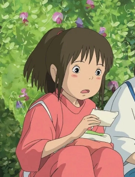
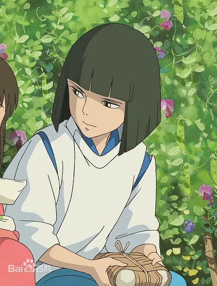
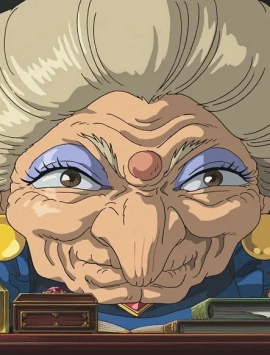
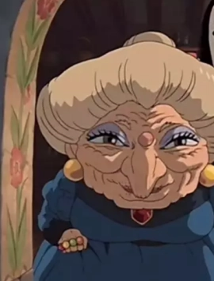
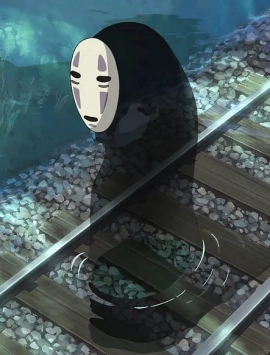
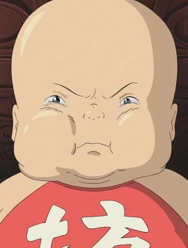
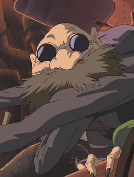
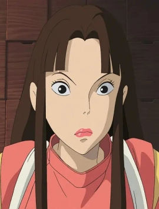
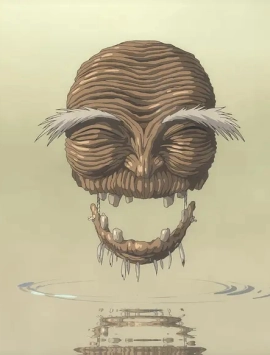

-

荻野千寻
10岁的小学四年级生，随父母搬家到新城镇，在搬迁的路上，误入鬼怪神灵休息的世界。为了拯救变成猪的父母，在小白的帮助下，她留在澡堂“汤屋”工作，逐渐成长。汤婆婆为了控制来到这里的人，将她名字改为小千。最后帮助白龙想起了自己的名字，解除身上的咒语。
-

白龙
曾经生活在人类世界一条叫做“琥珀川”的河流里的龙，但因为河流被人类掩埋而无家可归，来到汤屋在汤婆婆门下学魔法，是澡堂的实际管理人员，汤婆婆的得力助手。他在千寻小的时候救过落水的千寻，并且记得她的名字。为此他冒险给了千寻很多帮助。
-

汤婆婆
澡堂“汤屋”的主管，同时也是镇上的管理人。她还经常会化身为黑翅膀的大鸟出门巡视，命令凡是不工作的人都要变成猪被吃掉，而为她工作的人都会被拿掉名字，一旦记不起来，就永远都离开不了她的澡堂了。然而，她对澡堂的客人却是百依百顺，笑脸相迎，每天都在房间里数钱记账，是一个十足的吝啬小老板形象。
-

钱婆婆
汤婆婆的双胞胎姐姐，尽管在人物造型上和汤婆婆基本没有任何区别，性格上却有这着大的反差，是一个性格温和而慈祥的人。钱婆婆和汤婆婆一样，也是个法力强大的女巫。她和汤婆婆长得一样，连手上带的戒指都是一样的。但是她跟汤婆婆的关系从小就很不好，所以她独自住在离澡堂很远的一个郊外小屋里。
-

无脸男
无脸男，神秘的鬼怪，全身黑色，头带一个白色面具。是一个渴望朋友的人，从一开始就在澡堂门口的桥上对小千产生兴趣，而最初也只有小千能看得到他，小千以为他是澡堂的客人，让他进来避雨，更加强了他对小千的喜爱。然而他在澡堂里逐渐受到了金钱和世俗的影响，成了一个可以变出金子，不停地吃东西甚至吃人的怪物。
-

坊宝宝
汤婆婆的独子，穿一件印有"坊"字样的肚兜。虽然他个子非常大，却是婴儿的模样，因为害怕“细菌”而天天待在堆满了玩具和枕头的房间里，和大多数孩子一样喜欢用哭来威胁人。后来被钱婆婆变成一只小老鼠跟随千寻旅行，有了很大成长。
-

锅炉爷爷
澡堂的锅炉房主管，表面上是一个普通的人类老爷爷形象，却长有可随意伸缩的六条手臂，非常方便于从巨大的药材柜拿取药材和工作。他拒绝了千寻在锅炉房工作，当送饭来的小玲看到千寻的时候，他却说这是自己的外孙女。由于他控制着澡堂泡澡用的药材和热水，多次帮助了千寻的工作，最后还拿出一张收藏了40年的车票送给千寻。
-

小玲
锅炉爷爷的好朋友，为了一只碳烧蝾螈而答应锅炉爷爷掩护千寻去找汤婆婆签订合约。后来成为千寻在澡堂最好的朋友，给了千寻很多鼓励和帮助，是一个犹如姐姐一样的存在。片中虽然没有说明其真实身份，但吉卜力在初期角色设定时采用的身份设定是白狐。
-

河神
澡堂的客人之一，刚来之时满身污泥和垃圾，全身散发恶臭，澡堂以为他是腐烂神，命令千寻用最脏的澡盆服侍他，然而在小千的辛苦清洗下，他焕然一新，变回龙形，众人这才发现原来他是著名的河川主人，只是被人类所制造的垃圾所污染，产生垃圾瘤生病，才会发出巨恶臭味。河神给千寻一颗河神丸子作为感谢，飘然离去。